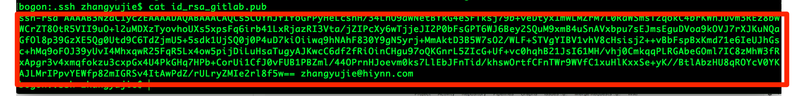
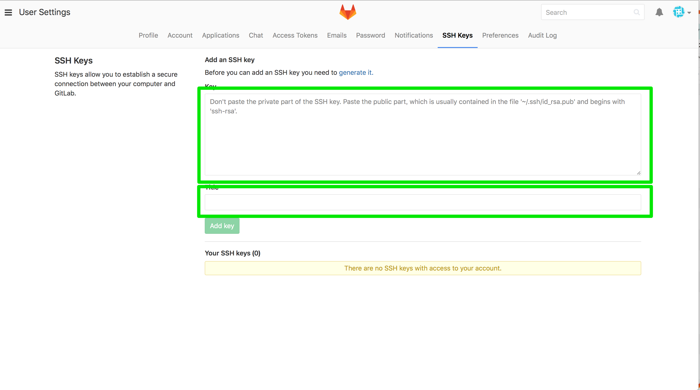

图易产品开发主线和产品分支
作者: 张玉杰
邮箱: zhangyujie3344521@163.com
电话/微信: 13269491793
产品开发分支线使用奇数位如v5.1、v5.3 、v5.5
产品稳定版使用偶数位如v5.2、v5.4、v5.6
产品开发团队只能在奇数版上开发、提交代码
项目临时开发团队在在偶数版上建立分支如v5.2.1 v5.2.3
设置本地git
git config --global user.name "郝海旺"
git config --global user.email "haohaiwang@hiynn.com"
创建gitlab对应的ssh key
查看本地所有创建的key
cd ~/.ssh
ls
如果得到有类似id_rsa id_rsa.pub
cat id_rsa.pub
文件尾的邮箱是否是你的企业邮箱，如果是则跳过生成可以的步骤，直接粘贴key到192.168.0.34
如果没有找到和你企业邮箱对应的key则创建新的key
ssh-keygen -t rsa -C "youremail@yourcompany.com"
enter file 输入 id_rsa_gitlab
输入2个回车，密码为空
最后创建两个文件id_rsa_gitlab 和id_rsa_gitlab.pub
添加私钥
ssh-add ~/.ssh/id_rsa_gitlab
查看新生成的key
cat ~/.ssh/id_rsa_gitlab.pub

粘贴新生成的key到gitlab

clone自己的分支
git clone git@192.168.0.34:tueasy/visual2D.git
创建本地开发分支并切换到该分支.分支名字以自己名字命名如hhq
git checkout -b hhq
修改内容之后执行commit
git commit -m '******' file file2
提交本地分支到远程分支 hhq上
git push origin hhq
注: 每次提交之前先从远程该分支上pull、merge之后再提交
最后到gitlab上将hhq pull request tueasy/visual2D/Dev 即将代码推送到tueasy/visual2D的Dev分支等待项目管理员合并到Dev
合并远程主开发分支Dev
git pull git@192.168.0.34:tueasy/visual2D.git Dev